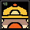
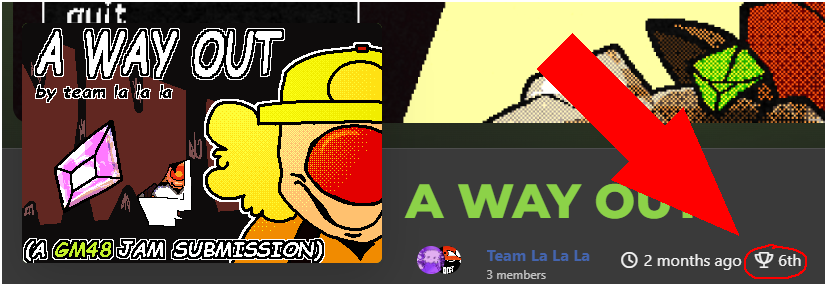
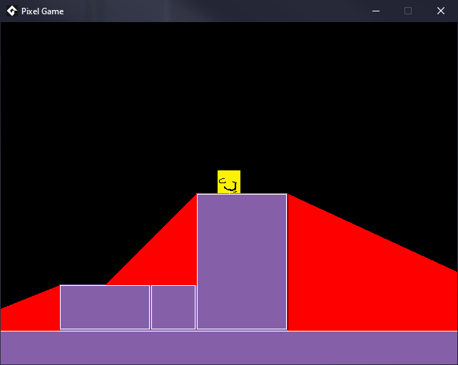
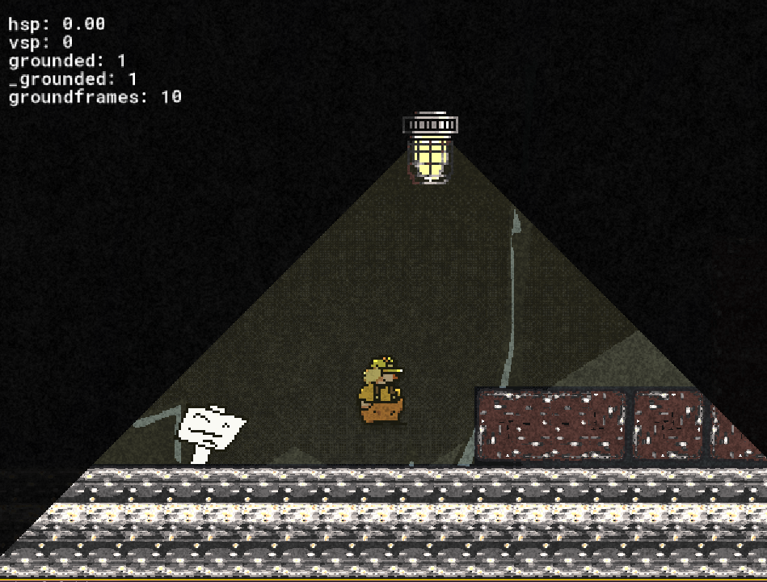
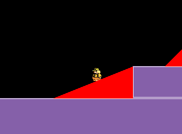
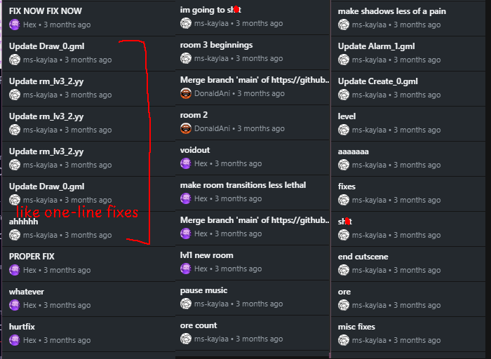

GM FORTY EIGHT
9/23/26
Team La La La


This is a post-mortem writeup for A WAY OUT. If you have not yet played it, you should do that before reading this blog post as some parts will not make sense until you do.
Additionally, some parts of this writeup can get a little mean. Team La La La holds no ill will for any other participants of GM48 unless they vibe coded their game.
A few months ago, Donald, Hexose, and I decided to participate in a game jam. Specifically, we participated in the 49th GM48 jam, a GameMaker jam where participants have 48 hours to make a game. In our case, the theme was "Total Darkness".
SECTION 1: COMPLAINING ABOUT GM48
So to the people reading this, you might have noticed theres three of us! As Kayla mentioned in her the stuff before, GM48 was... something! I personally had a very (if not overly) optimistic view on it, i hoped for alot of things while making art for it. That being pray tell, first place! But that was like the ultimate goal, i really just wanted top 5.

Welp!
Yeah... If you look in the bottom right, you can see we ALMOST got top 5. But still, heart was shattered. Tehwave, if you see this, my little Donald heart is in pieces.. but i forgive you. *sniff* John you were gonna be someone great, someone spoken for the ages, now look at you my boy.. defiled. Ill never forgive them for what they did to you. None the less, if you were to ask me, "would you do a gamejam again?" Absolutely! Just not GM48, it taught me what i need to know, but its not for me.
This isn't actually our first time writing a retrospective on GM48 49! In the Team La La La group chat there is a Google Doc of our initial idea for writing up a postmortem. It will stay dead and buried because we were much too optimistic in that initial writeup. John Miner was robbed and I truly wonder how tehwave is able to sleep at night after something like this. Like, at risk of sounding like an asshole, I think we were head and shoulders above the majority of people who submitted a game! The way that they incentivised their community voting is some absolute garbage. I'm convinced that our placement was determined by all of two people who actually bothered to rate games in a way that affected the final outcome.


Hello! I'm the special guest! Despite the other two's opinions, I'm still pretty happy with how gm48 turned out. The voting was scuffed (and we totally deserved higher), but I'm still proud of what we got done. That isn't to say it wasn't super flawed though.. The site was awfully clunky. you had to give written feedback to a few other games to actually qualify, but the counter updated once every whenever or so. We were left asking questions wondering if we were doing it right at all.. Kayla already said this but I'm so so sure that the written feedback meant absolutely nothing towards placing too. The page for rating the game was hidden away and nobody mentioned it even existed. I can't be certain though, it was never explained how game rating is decided other than it being "community voted".
Kind of sucked to see how AI generated submissions were allowed, but atleast they weren't able to compete. I feel like using AI in a game jam, game development as a whole even, is kind of dumb. You don't get any creative vision, the codebase is going to be miserable to look at and it just deters people from playing your game. I'm also not exactly sure why innovation was our lowest score despite the fact we were the only ones to play with the concept a little more. A lot of the other games took the theme pretty literally and plunged the player in darkness, which wasn't the most fun to play a lot of the time. The cave itself is in total darkness, which is why you need the light to survive! I'd say it was worth the late nights but only because of how writing the collision system benefitted me later on, which I'll talk about below.
SECTION 2: MAKING THE GAME
AKA: what the original post-mortem was
I wrote a lot of the engine code for the game! Collisions, states, camera.. probably a few other things too. Having experience with making platformers beforehand was a huuge advantage. Collisions were pretty much done in just the first few hours! Starting out, the system was pretty similar to (shameless plug) my own game.. but further in I realised it'd have to support more than just simple solids and slopes This is what I'm most proud of from the gamejam! Looking back, the collision system was certainly still pretty rough.. Especially slopes. But it did the job! I ended up using a good chunk of it in my own game! (shameless plug) Obviously rewritten, and slopes are much better now. Being able to make solids non-collideable is so useful and I can't believe I didn't think of it sooner.
I was the one to implement a lot of the gimmicks too. Buttons, boxes, moleman, ladders were all me! My personal favouite were the boxes. I implemented a ton of tiny little details into them that didn't really get utilised in the final game. I don't really mind all that much though, little details like that make the game feel a lot more complete in my eyes. I think its a shame that the magnets were super under utilised.. We would've had another level with them but we had to scrap it due to it being still little rough as it was forgotten about until near the end of the deadline. Theres still a lot I would've liked to polish or implement but after everything thats happened I dont think we're making a post mortem build any time soon. Sorry about any sprites I forgot to add Donald..
As a treat, heres some screenshots of how the game looked in development!



If you're interested in seeing more, I put a few indev clips on my copyparty! (sponsored)
---
I coded the entire light mechanic! It was really really hard and there was some really strange logic behind it that I could never understand again
but it worked and that's what mattered. It was done within like 24 hours of the starting mark which is pretty impressive if I do say so myself.
The actual visible shadows and the effective shadows (the ones that damage you) are actually two separate systems with the second relying entirely
on raycasting which made it easy peasy! The visual shadows are some of the worst code I've ever written, relying on some
gpu_set_colorwriteenable wizardry along with three whole surfaces to get it working the way I wanted it to.
I also did all of the music! Which is a little surprising considering that I'm really not much of a musician. I'm a hobbyist at best and it takes me like a week to get something I'm happy with, so the fact I was able to get both the title theme and the main theme in a state I'm happy with in like under a day each is pretty surprising and I'm quite proud of it.


The main theme is actually a pseudo-remake of a very old song of mine, compare the two below!
Entirely unrelated, but here's a sketch I made of potential boss music for A WAY OUT that obviously did not get used, mostly because I made it like months after the game jam concluded. It quotes a different part of the same old song that the main theme does, which I think is cute. I like to reference old works in new music.
The end screen music is whatever but the game over music I truly hate with a passion. It was thrown together in like 5 minutes, doesn't fit the musical style of the rest of the game, and is super duper short. I hated it so much that I remade it, and that's what you're listening to now!
Other than music and the light stuff, I mostly played support for Hexose and helped him with code, along with designing and art passing a good few levels. Making levels was stressful, man. The final stretch of the game has one less level than the other sets because Donald made one, didn't test it, and didn't tell us so it just kind of sat there while we worked and eventually had to be cut when I tested it and determined it was unsalvagable. In total, I coded the game over sequence, the level transition, the pause menu, and the dialogue system. The Git commit history for this project is really funny.

---
I had what id say was the most fun job in any game is, being the artist. If i can be frank, i had a bit more freedom. I got to make some enemy designs and say how they worked and all, so i had a tid bit more control. Now in the process of making this game i have to admit i had no clue what i was doing, i never actually had been in a jam with full artistic freedom! It took alot of time to figure out my scope, Aseprite is a fun tool though!
I never really had any noticable bumps in development on my department, it was all very smooth sailing. My other 2 hombres over here can atest to that, while i sat there and watched them work their butts off while slapping my fat belly and laughing. I was a very swift worker in this team, and actually a good quote from hexose was, "deadlines are a crazy thing." and to be honest, yeah! yeah they are man! I frankly did all that sprite art with a passion and loved every second of it, like i said its really just the end result that made me sad. And i wanna note, Team La La La made very good relations with Team Tehdahs during the endgame, you should totally check out lampyride! If Pichu and Teh see this, seriously even in September, your guy's stuff was great and it was alot of fun getting to work on a jam with you guys despite our goal falling short.
SECTION 3: WHAT NEXT FOR TEAM LA LA LA?
We all die.
But in all seriousness, I'm not really sure. Maybe we'll revisit A WAY OUT at some point to fix a couple issues and inconsistencies, but I don't see us fleshing it out into a full game anytime soon... If you ask me, I think it's about wraps for Team La La La. If we ever do anything together again, it'd probably be absorbing Hexose into Team Sunglasses and working under that name.
All i can really add to this is Team La La La is like that one girl you meet on a speed date and then dont exchange numbers. I dont think we have much more in us, but whenever Kayla and Hexose wanna do anything, ill be there. Tehwave, you've given me an experience i will never forget, stay safe out there in those GM48 streets my nemesis.